Thingspeak y Microblocks
Partimos para esta sección de conocimientos ya vistos en el apartado crear un canal en Thingspeak de la sección Teoria básica de IoT. No obstante lo dicho, repasaremos alguno conceptos y profundizaremos en el tema.
En este proyecto trabajaremos por facilidad con los sensores integrados en la micro:STEAMakers, pero es perfectamente ampliable a sensores conectados a la placa con, por ejemplo, la Shielbit. Lo que vamos a hacer es recopilar información y enviarlos al broker a través de WiFi donde serán mostrados como gráficos.
Los datos se pueden visualizar en tiempo real y se pueden configurar para acceso privado o público, teniendo así la posibilidad de compartir información. Se pueden configurar hasta ocho gráficos simultáneamente y los datos se pueden descargar para trabajhar en un análisis más detallado.
Thingspeak dispone de una opción gratuita para uso individual que presenta algunas limitaciones como la cantidad de datos que se pueden compartir y la rapidez con la que se pueden actualizar los mismos. También existe una versión de pago con funciones avanzadas.
En la versión gratuita, el número de consultas está limitado a ocho mil (8000) por día, con un intervalo obligatorio de 15 segundos entre ellas. Esto va a ser más que suficiente para nuestro proyecto y para muchos proyectos personales.
Introducción¶
Los materiales para este proyecto son simples, vas a necesitar:
- Un ordenador con conexión a internet.
- Una micro:STEAMakers con cable USB.
- Una cuenta de Thingspeak configurada.
Una vez registrado en Thingspeak, crea tu propio canal para publicar los datos del proyecto. En el menú principal selecciona en el orden que se ve en la imagen:
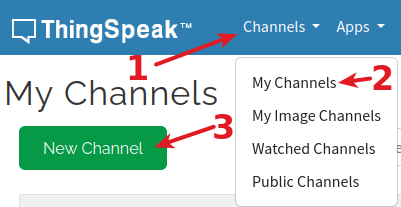
Crear canal en Thingspeak
{kind=link}
Una vez creado el canal debes completar la información. A continuación se resume la información que es posible configurar:
{kind=link}
- Nombre del canal: escribe un nombre único para el canal ThingSpeak.
- Descripción: escribe una descripción del canal ThingSpeak.
- Campo n°: al marcar la casilla se habilita el campo para escribir un nombre para el mismo. Cada canal de ThingSpeak puede tener hasta 8 campos.
- Metadatos: permite escribir información sobre los datos del canal, incluidos datos JSON, XML o CSV.
- Etiquetas: campo para introducir palabras clave que sirvan para identificar el canal. Las etiquetas van separadas por comas.
{kind=link}
- Enlace externo: si tienes una página web que contiene información sobre el canal ThingSpeak, este es el lugar para introducir su URL.
- Enlace a Github: si tienes un repositorio en Github introduce su URL aquí.
- Elevación: para especificar la altitud geográfica del lugar en metros.
- Mostrar ubicación del canal: Se deben indicar la latitud y la longitud en grados decimales.
- Mostrar video: si tienes un video de YouTube™ o Vimeo® con información del canal, especifica la ruta completa de la URL del video.
No olvides hacer clic en “Guardar canal” en la parte inferior para crearlo correctamente.
Para hacer que el canal sea público recuerda compartirlo.
En este proyecto comprobaremos el entorno local y parámetros energéticos de la placa para los siguiente valores de sensores integrados:
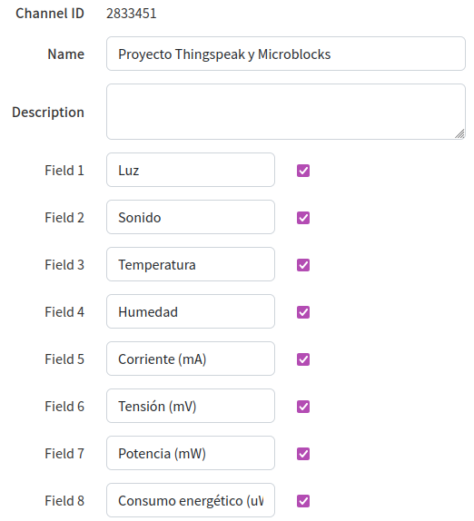
Campos del canal en Thingspeak
{kind=link}
Los datos se muestran en un panel de Thingspeak en la nube y se podrán ver desde cualquier lugar siempre que se tenga conexión a Internet.
Utilización de las API Keys de Thingspeak¶
En la pestaña Api Keys tenemos las claves que permiten escribir o leer el canal. Si conocemos las claves es porque somos propietarios o usuarios autorizados del canal. La clave para enviar datos es Write Api Key y para leer datos del canal es Read Api Key. También tenemos un campo Note que se utiliza para introducir información sobre las claves de lectura del canal. Por ejemplo, se pueden añadir notas para realizar un seguimiento de los usuarios con acceso al canal. Ambos tipos de claves disponen de un botón de regeneración por si en algún momento estas claves han quedado comprometidas.
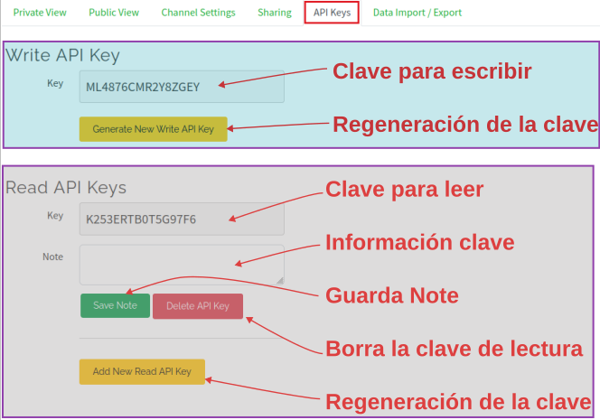
API Keys de Thingspeak
{kind=link}
A la derecha de las claves tenemos la información fundamental de como acceder al canal para enviar o recibir datos mediante el método GET.
Para poder escribir el programa debemos saber los datos de la clave API de escritura del sitio web de Thingspeak. Como hemos visto esta es la clave que le indicará a Thingspeak que estamos transmitiendo datos a nuestro canal.
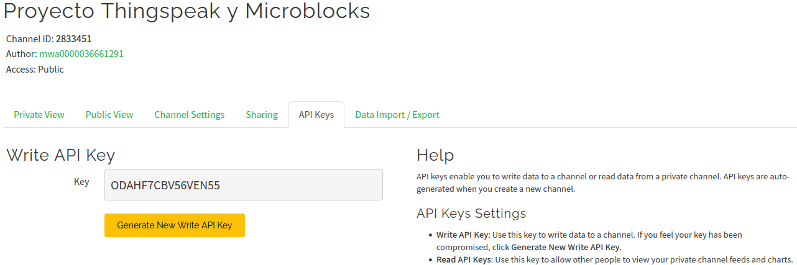
API Keys de escritura del canal de Thingspeak
{kind=link}
Métodos GET y POST¶
El protocolo HTTP tiene dos métodos para realizar una solicitud de datos a una URL. Para enviar información dentro de la solicitud los dos métodos de HTTP son GET y POST.
Ambos métodos tienen el mismo propósito aunque con diferentes características y permiten enviar información desde el cliente al servidor dentro de la solicitud.
Vamos a describir brevemente ambos aunque para Thingspeak, que es el caso que nos ocupa, utiliza solamente el método GET.
- GET: En este método la información se incluye junto a la dirección URL después de un símbolo ? Si tenemos que incluir varios datos en una petición hay que separarlos con el símbolo &.
- POST: Este método no incluye los datos en la dirección sino que los envía aparte de manera no visible. Si tenemos necesidad de enviar datos sensibles este es el formato a utilizar.
El método GET es sencillo de implementar pero presenta como principal desventaja la falta de seguridad en el envio, porque los datos están a la vista de cualquiera. Otras limitaciones son que los datos solamente pueden contener letras y números y que la longitud máxima de la URL no puede superar los 2000 caracteres.
Escribir en el canal¶
En las Solicitudes API (API Requests) a la derecha de las APIs vemos que para escribir en el canal la solicitud GET es:
Como podemos ver es una solicitud HTTP, en su versión segura, a una URL de thingspeak en la que se envía una actualización (update) y tras el símbolo de ? Va la clave de escritura (Write API Key) y a continuación el símbolo & seguido por el valor del primer campo (Field 1) que tiene como nombre field1 (no se puede cambiar) y como valor por defecto cero.
Esta petición puede funcionar incluso sin estar trabajando con un dispositivo IoT, es decir, a modo de prueba podemos enviar valores desde nuestro navegador (uno cada 15 segundos como máximo). A modo de prueba vamos a enviar el valor del campo 1 un par de veces. En ambos casos Thingspeak debe responder enviando un número para indicar el número de datos recibidos y que el dato se ha recibido correctamente.
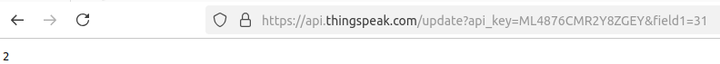
Escritura en un canal de Thingspeak
{kind=link}
Leer el canal¶
Para la lectura del canal tenemos tres opciones:
- Primera: para leer datos de un canal. El formato de la respuesta lo vemos al final de la URL, antes del parámetro de cadena de consulta que se añade después de un signo de interrogación ?. Se puede utilizar el parámetro de resultados para controlar el número de entradas devueltas, que es hasta 8000. Si se pone un 1 se devuelve la última entrada recibida.
Una línea como la anterior puesta en la barra de navegación da como resultado, para la pestaña de datos en formato JSON, lo siguiente:
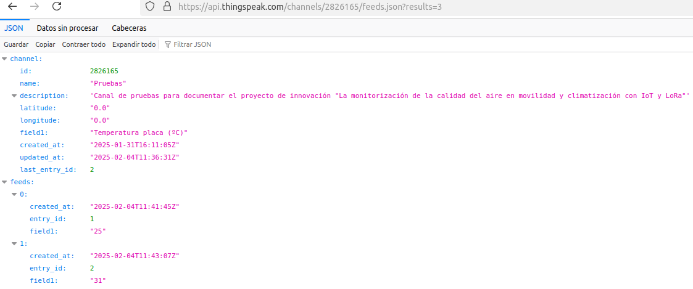
Leer un canal de Thingspeak
{kind=link}
Si nos cambiamos a la pestaña “Datos sin procesar” nos devuelve en texto plano lo siguiente:
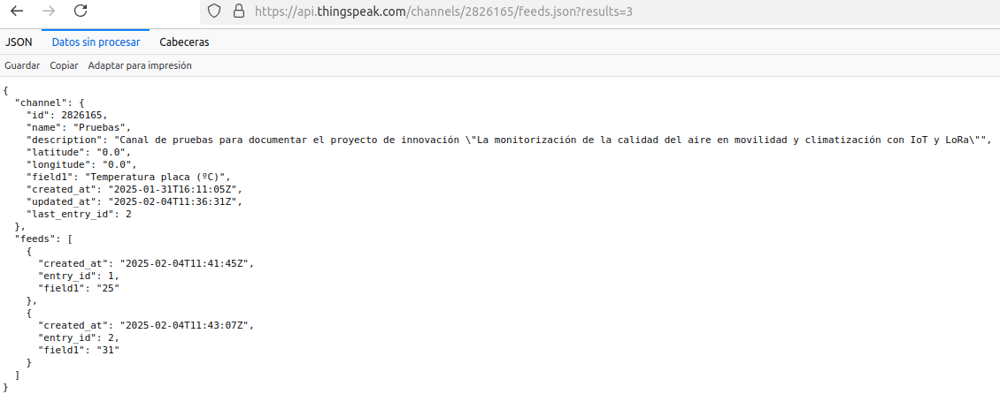
Leer un canal de Thingspeak
{kind=link}
En “Cabeceras” nos indica datos de la de respuesta y la de la petición que no son objeto a tratar en nuestro caso. También podemos especificar que la lectura de los datos se realice en formato CSV:
Esto hará que se descargue un archivo en feeds.csv con todos los datos subidos al canal con indicación de la fecha y hora en formato UTC y el valor separados por comas. En nuestro caso el archivo leído en el editor de texto gedit se ve así:
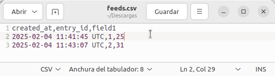
Leer un canal de Thingspeak
{kind=link}
Si hacemos doble clic sobre el archivo se abrirá la hoja de cálculo (Libreoffice Calc) con la ventana de configuración de importación:
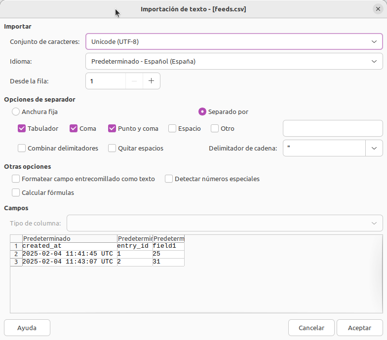
Leer un canal de Thingspeak
{kind=link}
Que una vez configurada y aceptada nos abrirá el archivo en el programa Calc, en este caso.
La última forma de especificar el formato de los datos es en XML haciendo:
- Segunda: es otra forma de obtener los mismos resultados pero ahora nos permite especificar por que campo iniciar la consulta. Admite los mismos formatos que en el caso anterior:
- Tercera: que es para consultar el estado del canal:
Si lo que pretendemos es consultar datos de un canal privado la consulta GET requiere especificar como parámetro al API Key de lectura y tendrá la siguiente forma:
La solicitud GET anterior también funciona para canales públicos y admite las mismas formas que las vistas anteriormente.
AVISO
Microblocks no soporta, a fecha de creación de esta web, HTTPS.
Programa¶
Lo primero que vamos a hacer es crear una variable "api_key" y ponerle como valor el número de clave de escritura del canal. Arrastramos desde "Control" un bloque "al empezar" y desde "Variables" el bloque "asigna api_key a..." donde escribimos la clave.
El siguiente paso es agregar un bloque "conectate a la wifi..." agregando la libreria WiFi si resulta necesario. En este bloque establecemos el nombre de la red 2G y la contraseña de acceso.
Desde el menú "control" arrastramos un bloque "espera..." que ajustamos a dos segundos para que de tiempo suficiente a establecer la conexión. El estado del programa en este momento será:
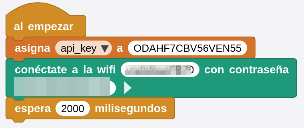
Inicio del programa
{kind=link}
A continuación de la espera vamos a poner un bloque "por siempre" y es donde van a producirse todas las escrituras de datos en el canal. Vamos a ver como realizar el envio paraa uno de los sensores y para el resto lo único que tendremos que modificar es el propio sensor y el número de campo.
El primer paso es añadir la libreria que necesitamos. Hacemos clic en "Añadir libreria" y entramos en el grupo "Red" donde seleccionamos "Cliente HTTP". Ahí nos encontramos un bloque "petición ... con contenido..." que arrastramos a nuestra zona de programa. Si retomamos la línea de escritura en el canal vemos que consta de una dirección seguida de la opción "update" (actualizar), un signo de interrogación "?" seguido de "api_key" y un signo igual tras el cual va la clave obtenida en Thingspeak. A continuación tenemos un "&" seguido de field1 y su valor:
**OBSERVA BIEN LA LÍNEA ANTERIOR
Se ha suprimido la parte https://
Para una mayor comodidad y claridad vamos a dividir la línea en partes y crearla a partir de un bloque "une..." que podemos encontrar en "Datos". La configuración de este bloque se verá así:
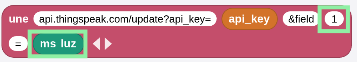
Bloque "une..."
{kind=link}
Se han recuadrado las dos cosas que debemos cambiar para cada variable.
A continuación vemos el programa completo con las peticiones POST para el sensor de luz y el de sonido.
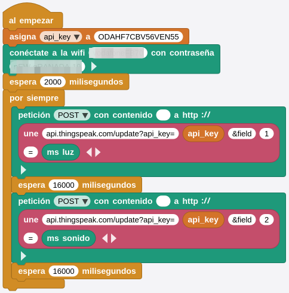
Programa para dos sensores
{kind=link}
Para hacer mas corto el programa vamos a crear funciones para cada sensor con los bloques vistos incluyendo el retardo necesario por cuenta gratuita. A continuación vemos la definición para el sensor de temperatura:
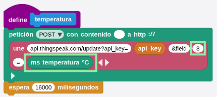
Definición de la función temperatura
{kind=link}
Creamos de forma similar el resto de funciones y ocultamos la definición de los bloques creados. El programa final con todos los sensores es el siguiente:
{kind=link}
En la imagen siguiente vemos un momento del funcionamiento del programa con la definición de un bloque visible.
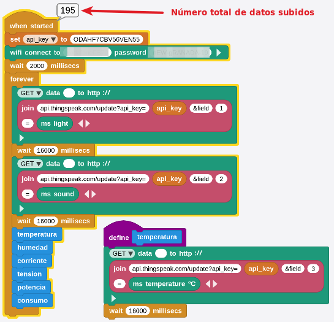
Programa
{kind=link}
El bloque más importante es el bloque con la solicitud POST o GET. Es durante esta solicitud cuando transmitimos toda la información importante al sitio. En la imagen, para el bloque que vemos la definición, se realiza la actualización (escritura) del campo 3 con el valor leido del sensor de temperatura.
A continuación vemos las gráficas de algunos de los sensores:
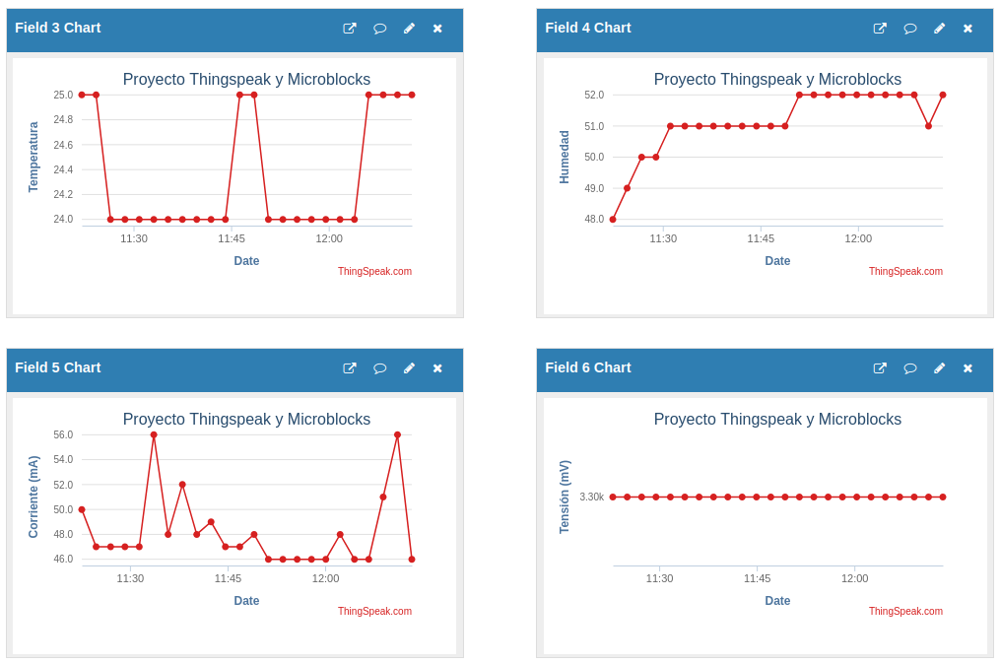
Resultados subidos
{kind=link}
Podemos decir que hemos convertido la micro:STEAMakers en un dispositivo IoT inteligente.